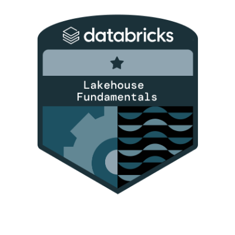
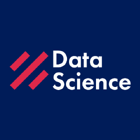
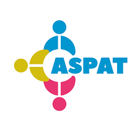

Curriculum
MIra mi CV
Formación
Universidad Nacional del Callao
Ago.2017 – Ago. 2022.
- Becado por parte del estado peruano debido por alto rendimiento académico (RJ 981-2021-MINEDU/VMGI-PRONABEC-OBE).
Instituto Cultural Peruano Norteamericano (ICPNA)
Jun.2020 – Actualidad.
- Estudiante de Lengua y literature inglesa.
Cursos y Certificaciones
SAA-C03 AWS CERTIFIED SOLUTIONS ARCHITECT - ASSOCIATE

Ene. 2024
Amazon Web Services
Validando mi capacidad para diseñar y desplegar soluciones escalables y seguras en la nube de Amazon Web Services. Este logro destaca mi experiencia en arquitectura de soluciones en la nube y mi compromiso con la excelencia en la industria de la tecnología.
CLF-02 AWS CERTIFIED CLOUD PRACTITIONER
Ene. 2024
Amazon Web Services
Confirmando mi comprensión básica de los servicios y principios fundamentales de la nube de Amazon Web Services. Este logro resalta mi compromiso con el aprendizaje y mi capacidad para trabajar en entornos de computación en la nube.
DP-900 MICROSOFT AZURE FUNDAMENTALS

Dic. 2023
Microsoft Azure
Validando mi comprensión fundamental de los servicios y conceptos clave de Microsoft Azure. Este logro demuestra mi capacidad para trabajar de manera efectiva con tecnologías en la nube y mi compromiso con el aprendizaje continuo en el campo de la informática en la nube.
INGENIERIA DE DATOS CON MICROSOFT AZURE
Jul. 2023 – Ago. 2023
Smart Data
Completé el curso de Ingeniería de Datos con Microsoft Azure, donde adquirí habilidades clave en el diseño, implementación y gestión de soluciones de datos en la nube utilizando tecnologías de Microsoft Azure. Aprendí a trabajar con servicios como Azure Synapse Analytics, Azure Data Factory, Azure Databricks entre otros para crear pipelines de datos eficientes, procesar y transformar datos a escala, y construir soluciones analíticas avanzadas.
DATABRICKS LAKEHOUSE FUNDAMENTALS
Feb. 2023 – Abr. 2023
Databricks
Culminé el curso aprendiendo los conceptos fundamentales de la plataforma Databricks Lakehouse. Este curso me enseñó a trabajar con diferentes tipos de datos, procesar grandes volúmenes de datos en lotes y en tiempo real, y aplicar técnicas de análisis y machine learning utilizando herramientas como Apache Spark y SQL.
BIG DATA FUNDAMENTALS WITH PYSPARK
Ago. 2022 – Oct. 2022
Datacamp
Aprendí sobre Apache Spark, un framework para procesamiento de Big Data, junto con su ecosistema que incluye Spark SQL, MLlib, GraphX y Spark Streaming. Aprendí sobre conceptos básicos como Clustered computing, parallel computing y distributed computing, y sobre los tipos de datos utilizados en Spark, como RDDs y dataframes. Interactué desarrollando laboratorios utilizando la shell de PySpark basada en Python para trabajar con estructuras de datos. Este curso me ha preparado para trabajar con grandes volúmenes de datos y aplicar técnicas avanzadas de análisis y machine learning en mi trabajo como ingeniero de datos.
PYTHON PARA EL ANÁLISIS DE DATOS
Set. 2022 – Oct. 2022
Data Science Research Perú
Aprendí a utilizar librerías para la manipulación y limpieza de datos como NumPy, Pandas, Matplotlib y Seaborn para el análisis y visualización de datos en Python. En este curso diseñé el análisis exploratorio de datos en un dataset de encuesta realizada a usuarios de redes sociales para la elaboración de un modelo predictivo de clasificación del riesgo de sufrir depresión en usuarios de redes sociales.
AIRFLOW IN PYTHON
Set. 2022 – Nov. 2022
Datacamp
Culminé aprendiendo el funcionamiento de Apache Airflow, automatizar flujos de trabajo complejos con Python. Permitiéndome administrar y programar tareas, definiendo DAGs, conociendo l ainterfaz de usuario web, aprendiendo términos como tareas, scheduling, ejecutores, debugging, Troubleshooting entre otras cosas más.
SQL SERVER PARA EL ANÁLISIS DE DATOS
Oct. 2020 – Ago. 2021
Datux Perú
Adquirí habilidades avanzadas en SQL, aprendiendo a realizar consultas complejas y análisis de datos, utilizando funciones, consultas anidadas, vistas. Adquirí conceptos como Datawarehouse, a utilizer Integration Services para la integración y transformación de datos, diseñando y construyendo un Datamart para el análisis de información en un proyecto llamado “SUPERMAYORISTA”. Desarrollé habilidades en la gestión de la base de datos, procesos ETL de lotes de archivos bancarios. Creación de los dashboards interactivos para la toma de decisiones basada en análisis de datos.
CURSO PROFESIONAL DE PYTHON
May. 2022 – Jun- 2022
CódigoFacilito
Culminé conociendo las bases de la programación en Python, incluyendo variables, estructuras de control de flujo y funciones. Además, desarrollé habilidades en la creación y manejo de módulos y paquetes en Python.
SCRUM FOUNDATION
Mar. 2022 – Mar. 2022
CertiProf
Aprendí los fundamentos del marco de trabajo ágil Scrum, incluyendo los roles, eventos y artefactos. También se aborda cómo Scrum se puede aplicar en diferentes contextos de proyectos.
DIPLOMADO EN BUSINESS INTELLIGENCE, ANALYTICS Y BIG DATA
Oct 2021 - Ene. 2022
Universidad Nacional Agraria La Molina
Adquirí conocimientos sobre el entorno, funcionamiento y ecosistema de Hadoop, incluyendo sus herramientas como Hive, Pig, HBase, Kafka, Flum, etc. Además, realicé laboratorios para experimentar con Hadoop y sus componentes, lo que me permitió consolidar mis habilidades en ingeniería de datos y tener una comprensión más profunda del análisis de big data.
BUSINESS ANALYTICS PARA LA PROYECCIÓN DE LA GESTIÓN
Nov. 2021 – Dic. 2021
Pontífica Universidad Católica del Perú
Adquirí conocimientos en la implementación de herramientas y técnicas de análisis de datos para la toma de decisiones empresariales.
CURSO DE ESPECIALIZACIÓN DE EXCEL
Ene. 2018 – Abr. 2018
Sistemas UNI
Culminé aprendiendo a manejar de forma avanzada las funciones y herramientas dentro de Excel, incluyendo tablas dinámicas, macros y gráficos.
Experiencia Laboral
CLOUD DATA ENGINEER
Nov. 2023 - Actualidad
DW CONSULWARE S.A. (Cliente: Interbank S.A.)
- Realizar los procesos ETL en Teradata y la migración hacia AWS de las tablas involucradas dentro del proceso de Portafolio BP (Seguimiento Mora) del Comité de Cobranzas.
- Dar continuidad al negocio, modernizando estructuras heredadas bajo los estándares internos que se manejan, optimizando así el proceso para impulsar mejoras significativas y automatizando su ejecución.
- Estandarización de toda la lógica del negocio de Portafolio BP (Seguimiento Mora) e incorporación meticulosa de código que ayude a validar todas las fuentes de datos empleadas, consiguiendo que todo el procedimiento se ejecute de manera adecuada.
- Coordinación y ejecución eficiente de Jobs críticos para garantizar la obtención de soluciones sólidas.
- Solución efectiva de problemas, asegurando un flujo de datos fluido y confiable en entornos complejos.
- Aseguramiento de la calidad y gobernanza de datos dentro de cada proceso implementado relacionado con el Comité de Cobranzas.
ANALISTA DE MIGRACION - BI
May. 2023 - Oct. 2023
CHOUCAIR TESTING S.A. (Cliente: RIMAC Seguros y Reaseguros S.A.)
- Apliqué mis habilidades en ETL para desarrollar casos de pruebas utilizando scripts SQL en un entorno basado en cloud (BigQuery), mi enfoque se centró en la optimización al 100% de estos scripts; asegurando así la calidad, integridad y eficiencia de los procesos de transformación y extracción de datos. Contribuyendo significativamente a garantizar la confiabilidad de los datos utilizados en el proyecto en el que estuve involucrado.
- Logré reducir en un 100% la cantidad de incidencias y errores en los datos, garantizando así la implementación exitosa de un nuevo entorno de BI dentro de nuestro data lake en GCP, en cumplimiento con los rigurosos estándares de gobernanza de datos de RIMAC. Aprendiendo cómo gestionar y optimizar los flujos de datos dentro de un entorno altamente regulado.
PRACTICANTE DE SOPORTE A CLIENTES
Set. 2022 - Abr. 2023
América Móvil Perú SAC
- Gestión de casos críticos e incidencias en los aplicativos de la empresa en beneficio de la atención de los clientes. Dar seguimiento de las solicitudes y/o requerimientos atendidos con la finalidad de informar a los distintos canales de ventas el estatus final de las operaciones.
- Apoyo en la atención de las demás gestiones que se realizan en el área, además de identificar y proponer oportunidades de mejora en los procesos que busquen optimizar y mejorar el servicio de validación. Asegurar la mejora continua de los procesos de automatización dentro del área.
ANALISTA JR. DE BASE DE DATOS
May 2021 – Nov. 2021
ASPAT PERÚ
- Implementé soluciones de mejora en la programación y bases de datos de la página web y ERP, lo que redujo drásticamente el 60% de incidencias y permitió un aumento del 50% en el ingreso de nuevos colaboradores, al mejorar la eficiencia en la gestión de datos.
- Reduje la pérdida de información en un 80% a través de la normalización completa de las bases de datos, optimizándose para el análisis de los datos.
ANALISTA PROGRAMADOR SQL
Jul. 2020. – Dic. 2020.
IPROMEC PERÚ SAC
- Cumplí al 100% con las fechas de entrega, realizando la documentación exitosa del Plan de Sistematización para el área de logística junto con la ayuda del gerente de la empresa.
- Reduje los tiempos de almacenamiento de los gastos en un 50%, mediante la automatización completa de la administración de estos lo que llevo a beneficiarlos en un 90%, lo cual, a su vez, evitó la pérdida de información.